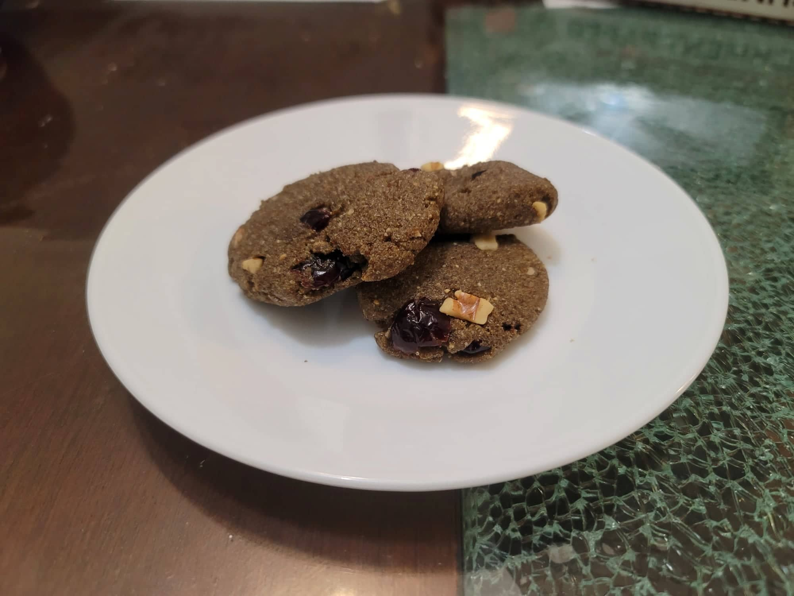

Autumn Harvest Cookies

Ingredients:
- 1/2 cup Wild rice flour
- 1/2 cup Fine cornmeal
- 1/3 cup Sunny Butter
- 1/8 tsp Salt
- 1/4 cup Maple sugar or 3 tbsp Honey
- 2 tbsp Sunflower oil
- 1/4 cup Dried cranberries, Chopped walnuts, or Cooked wild rice
Instructions:
- Preheat an oven to 350 degrees Fahrenheit.
- In a bowl, combine the wild rice flour, cornmeal, and salt. Then mix in the sunny butter, maple sugar/honey, and oil to form a stiff dough.
- Form the dough into 1 inch balls and place onto a parchment paper-lined baking sheet, slightly flattened.
- Bake for 8-10 minutes or until slightly firm. Serve warm or cooled.